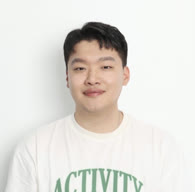

산업혁명
(1760~1840)산업혁명은 18세기 후반 영국에서 시작된 기계 발명과 기술 혁신이 생산 방식과 사회·경제 구조 전체를 뒤바꾼 대변혁입니다. 이 시기에 신분제가 무너지고 기술과 자본이 세상의 중심이 되면서, 역사상 처음으로 가장 밑바닥에서 당대 최고의 부자로 올라서는 자수성가가 대거 가능해졌습니다. 태어난 자리가 아니라 무엇을 익혔느냐가 사람의 운명을 가르기 시작한 것입니다.
1/6
산업혁명은 18세기 후반 영국에서 시작된 기계 발명과 기술 혁신이 생산 방식과 사회·경제 구조 전체를 뒤바꾼 대변혁입니다. 이 시기에 신분제가 무너지고 기술과 자본이 세상의 중심이 되면서, 역사상 처음으로 가장 밑바닥에서 당대 최고의 부자로 올라서는 자수성가가 대거 가능해졌습니다. 태어난 자리가 아니라 무엇을 익혔느냐가 사람의 운명을 가르기 시작한 것입니다.
1/6
조지 스티븐슨은 가난한 탄광 노동자의 아들로 태어나 학교를 다니지 못했고, 18세가 되도록 글을 전혀 읽지 못하는 문맹이었습니다. 그는 탄광 안의 야간 학교에서 밤늦게 글을 깨우쳤고, 공장에 있던 증기기관의 원리를 독학으로 익혀 탄광 기계 수리공으로 이름을 알렸습니다. 그리고 세계 최초의 상업용 증기기관차를 만들어 ‘철도 시대’의 서막을 열었고, 막대한 부를 쌓아 영국 산업계의 전설이 되었습니다. 그가 가진 것은 배경도, 학벌도 아니었습니다. 새로운 기술을 남보다 먼저 붙잡겠다는 간절함, 그것 하나였습니다.
2/6
1차 산업혁명이 블루칼라, 즉 육체 노동자의 세계를 흔들었다면, AI 시대는 화이트칼라, 지식·전문직 노동자의 세계를 정면으로 흔들고 있습니다. 차이는 속도입니다. 산업혁명이 퍼지는 데는 수십 년에서 수백 년이 걸렸지만, AI는 단 몇 주, 몇 달 만에 퍼집니다. 게다가 산업혁명이 ‘원래 하던 일’을 대체했다면, AI는 생각지도 못한 영역까지 대체하고 있습니다. 그 결과 많은 사람이 뒤처지는 것을 넘어, 아예 진입조차 생각하지 않고 외면해 버리는 현상까지 벌어지고 있습니다.
3/6
AI는 선택받은 사람들만의 것이 아닙니다. 오히려 아무것도 모르는 사람을 위한 것이라 해도 될 만큼, 지식인이 아닌 사람이 적게 투자하고 많이 가져가는 로우리스크 하이리턴의 기회입니다. 스티븐슨의 시대에 증기기관이 그랬듯이 말입니다. 그런데 사람들은 하지 않습니다. 미디어가 외치는 ‘AI 찬양’과 ‘지금 안 하면 늦는다’는 결핍 마케팅에 대한 반감이 쌓여, AI를 한다는 것 자체가 무겁고 부담스러운 일로 느껴지기 때문일 것입니다. 저는 그 무게를 걷어내고 싶습니다.
4/6
이 자리는 AI 용어를 외우는 시간이 아닙니다. 5시간이 끝나면 당신은 오늘 아침까지 손으로 하던 일 하나를 AI에게 맡기는 법을 알게 되고, “나는 못 해”라는 말이 왜 틀렸는지를 머리가 아니라 손으로 확인하게 됩니다. 그리고 내일 무엇부터 해야 하는지가 종이 한 장에 적혀 있을 겁니다. 스티븐슨이 야간 학교에서 처음 글자를 읽은 그 밤처럼, 그 시작이면 충분합니다.
5/6
저는 이 5시간이 그 이상의 값어치를 하는 시간이라고 믿지만, 이 지식의 가치를 돈으로 팔지 않습니다. AI를 향한 저의 진심을 어떤 욕심도 없이 나누기 위해, 이 행사에는 스폰서도, 단톡방도, 그 이후의 어떠한 액션도 두지 않습니다. 단 하루 진행하고 사라집니다. 이 컨퍼런스에 필요한 것은 딱 하나, AI를 배우고자 하는 당신의 마음가짐과 간절함뿐입니다.
6/6
13:00-14:00
오늘 컨퍼런스에 대한 소개와
글로벌 AI 현황을 세계여행하듯 둘러봅니다.
14:00-15:00
기본적인 AI 환경을 쉽게 이해하고
AI와 잘 대화해서 일하는 법을 알아봅니다.
15:00-16:00
AI 이미지, 영상툴에 대한 설명과
AI 영상을 잘 만들기 위한 팁들을 알아봅니다.
16:00-17:00
결국 AI 시대에도 중요한 창의력 문법과
AI와 쉽게 일하는 법을 알아봅니다.

박종원
AI Creative Director
AI로 또 다른 세계를 만들고 있습니다.
참가 신청기간
~ 9월 18일 자정 12시까지
참가자 선정 발표
9월 20일
본 행사
10월 17일 오후 12시 ~ 17시
서울 역삼권 행사장
참가 확정 시 작성해 준 이메일/연락처로
개별 연락 드릴 예정입니다.